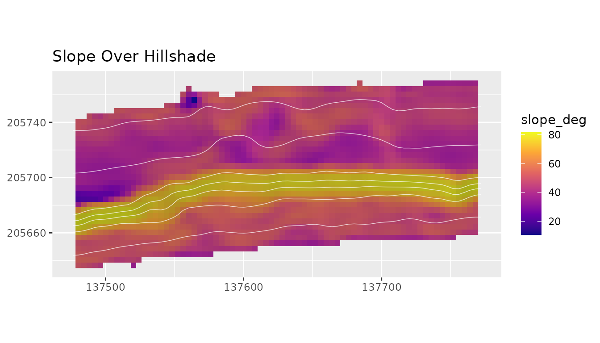
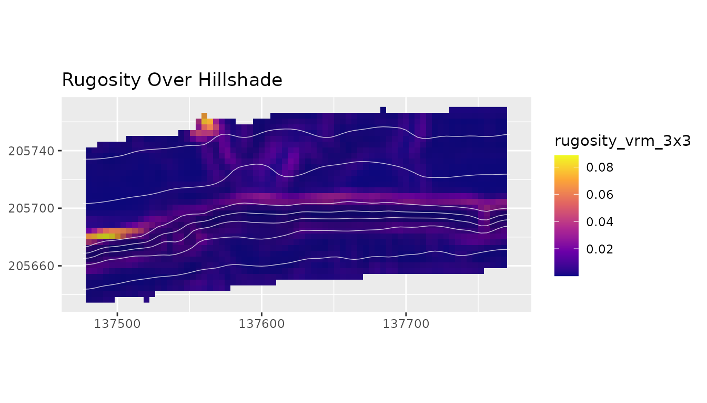
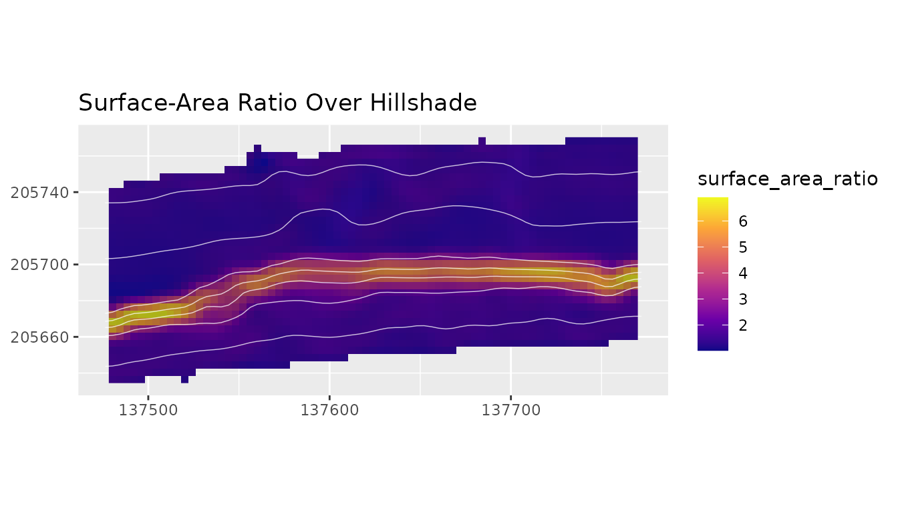
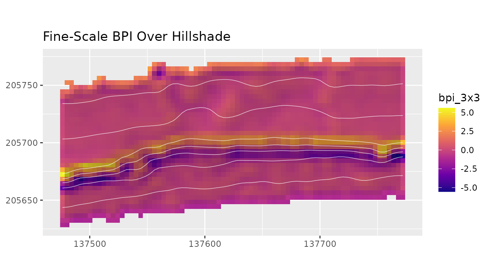
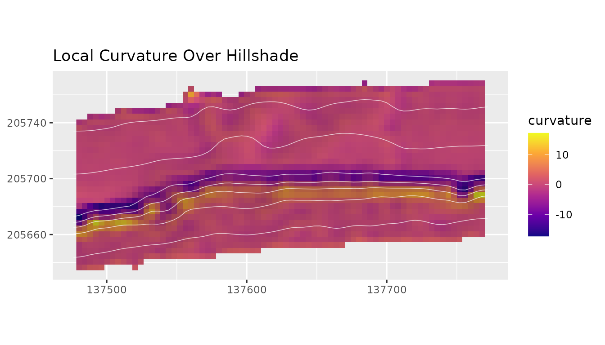

Terrain derivatives are scale-sensitive. Resolution, smoothing, CRS, and focal window size affect slope, aspect, BPI, TPI, curvature, rugosity, and surface-area style metrics. The examples use reduced Hole-in-the-Wall bathymetry from the southwest Puerto Rico shelf margin near La Parguera, Puerto Rico.
bathy <- read_bathy(blueterra_example("hitw"))
prepared <- prepare_bathy(bathy, depth_range = c(-220, -25), smooth = TRUE)Slope, Aspect, and Orientation
Slope and aspect describe local orientation. Aspect is circular, so northness and eastness convert it into two linear components that can be summarized in tables or used as predictors.
orientation <- derive_metric_stack(
prepared,
metrics = c("slope", "aspect", "northness", "eastness")
)
names(orientation)
#> [1] "slope_deg" "aspect_deg" "northness" "eastness"
terra::global(orientation[["slope_deg"]], c("min", "mean", "max"), na.rm = TRUE)
#> min mean max
#> slope_deg 10.63308 50.87477 81.67002
plot_metric(
orientation,
"slope_deg",
bathy = prepared,
contours = TRUE,
contour_interval = 25,
title = "Slope Over Hillshade"
)
Roughness, TRI, Rugosity, and Surface Area
These metrics describe local relief variability. Their values change with grid resolution and focal-window size, so windows should be chosen to match the feature scale being interpreted.
structure_metrics <- derive_metric_stack(
prepared,
metrics = c("roughness", "tri", "rugosity", "surface_area_ratio")
)
names(structure_metrics)
#> [1] "roughness" "tri" "rugosity_vrm_3x3"
#> [4] "surface_area_ratio"
terra::global(structure_metrics[["tri"]], c("min", "mean", "max"), na.rm = TRUE)
#> min mean max
#> tri 1.047873 4.929997 21.57846
terra::global(structure_metrics[["surface_area_ratio"]], c("min", "mean", "max"), na.rm = TRUE)
#> min mean max
#> surface_area_ratio 1.017471 1.954173 6.902548
plot_metric(
structure_metrics,
"rugosity_vrm_3x3",
bathy = prepared,
contours = TRUE,
contour_interval = 25,
title = "Rugosity Over Hillshade"
)
Surface-area ratio is derived from slope and should be interpreted as a local raster-cell surface approximation, not as a measured benthic surface area.
plot_metric(
structure_metrics,
"surface_area_ratio",
bathy = prepared,
contours = TRUE,
contour_interval = 25,
title = "Surface-Area Ratio Over Hillshade"
)
BPI, TPI, and Scale
BPI and TPI compare a cell with its neighborhood. For elevation-like negative bathymetry, positive BPI means a cell has a higher stored value than its neighborhood, which usually means shallower terrain. For positive-depth rasters, interpretation reverses unless the sign convention is converted first.
fine_bpi <- derive_bpi(prepared, window = 3)
broad_bpi <- derive_bpi(prepared, window = 11)
tpi <- derive_tpi(prepared)
multi_bpi <- derive_multiscale_bpi(prepared, windows = c(3, 7, 11))
names(multi_bpi)
#> [1] "bpi_3x3" "bpi_7x7" "bpi_11x11"
terra::global(fine_bpi, c("min", "mean", "max"), na.rm = TRUE)
#> min mean max
#> bpi_3x3 -5.548068 0.005683195 5.581367
terra::global(broad_bpi, c("min", "mean", "max"), na.rm = TRUE)
#> min mean max
#> bpi_11x11 -24.95 -0.02859849 29.15818
terra::global(tpi, c("min", "mean", "max"), na.rm = TRUE)
#> min mean max
#> tpi -6.241576 -0.01349438 6.279038
plot_metric(
fine_bpi,
bathy = prepared,
contours = TRUE,
contour_interval = 25,
title = "Fine-Scale BPI Over Hillshade"
)
Curvature
curvature <- derive_curvature(prepared)
terra::global(curvature, c("min", "mean", "max"), na.rm = TRUE)
#> min mean max
#> curvature -17.33103 0.03551389 17.26391The curvature layer is a Laplacian-style local index based on a four-neighbor kernel. It is useful as a compact measure of local convexity or concavity, but it is not profile curvature or plan curvature.
plot_metric(
curvature,
bathy = prepared,
contours = TRUE,
contour_interval = 25,
title = "Local Curvature Over Hillshade"
)